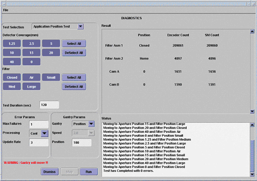
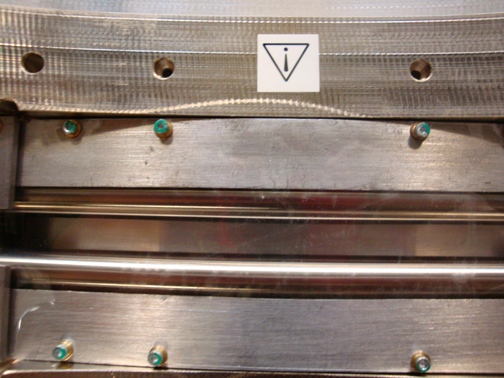
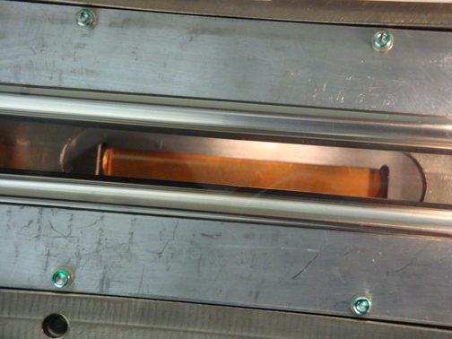

Operating Documentation
Direction 5307452-8EN, Rev# 4
Discovery CT750 HD Service Methods - Adv
Operating Documentation |
| Last Revision | 22 October 2008 |
You will run one pass of the Collimator Application Test and inspect the tube port for contamination or debris while the filters are moving.
This test positions the Cams and filter to the selected positions for the test duration.
| Lead Hazard | |
| Lead present in the collimator. Direct contact with the lead may cause injury. | |
| Wear protective gloves. |
From the Common Service Desktop, select [Diagnostics] , [Collimator Functional] .
Setup (see Illustration 1).
Detector Coverage: click [Select All]
Filter: click [Select All]
Test Duration: Select [120] (You can select longer, if desired)
Gantry Params
Gantry: Position
Speed: N/A
Position: 180
The test runs in continuous modes, which helps detect intermittent operating conditions. This is a means to visually validate the aperture and filter positions, and validate the operation of the collimator.
Inspection
Look for highlighted fields on the screen that indicate the cam or filter did not make it to position.
Check the log for additional information if errors occur.
While the test is running:
Visually check the collimator protective window for nicks, scratches, and signs of fluid leaks (see Illustration 2).
Using a flashlight, look down through the collimator opening, to inspect for debris or oil (see Illustration 3).
Illustration 1: Collimator Application Position Test Screen

Illustration 2: Collimator Filters

Illustration 3: Collimator Copper Filter
